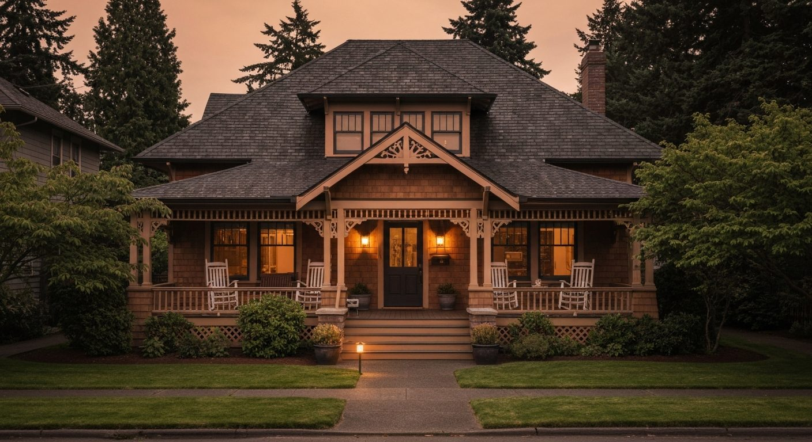
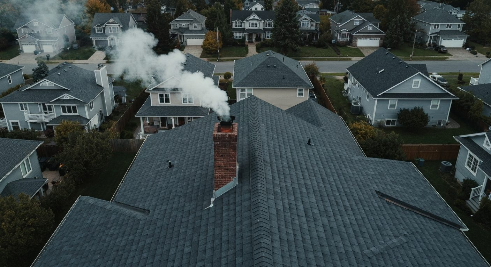

See the Difference.
Fast, Detailed, Tech-Forward.
Same-day delivery, every time. Every system photographed, video-documented, and thermally scanned, with plain-language findings so you understand every issue clearly.
Every Report Covers Every System.
Inspection Summary
Completed Apr 24, 2026 by Joseph Fallstrom · WA State License #25025346
Inspection is visual and noninvasive per RCW 18.280 and WAC 308-408C Standards of Practice.
Main Service Panel: Double-Tapped Breakers
Observed two conductors connected to a single circuit breaker terminal that is rated and approved for only one conductor. This double-tapping condition creates an overloaded connection point and represents a potential fire and shock hazard. Correction by a licensed electrician is recommended prior to closing.
Roof Perimeter Scan · Aerial Survey

High-resolution drone footage confirms integrity of second-story flashing, chimney mortar joints, and ridge cap shingles. No visual evidence of storm damage, lifted shingles, or missing fasteners. Gutters clear. Footage archived in report for reference.
Thermal Master Thor Scan · Southwest Bathroom Wall
Moisture Intrusion Detected
Infrared image shows a cooler thermal anomaly consistent with trapped moisture behind the shower surround, invisible to the naked eye. Recommend targeted moisture meter readings and contractor evaluation.
Active Maintenance Tracker
HVAC Filter Replacement
Clogged filter restricting airflow to forced-air furnace. Recommend replacement within 30 days.
Gutter Cleaning · Rear Elevation
Minor organic debris at downspout inlets. Clear before rainy season to prevent overflow and fascia rot.
Deck Ledger Board · Sealant
Flashing and sealant at deck-to-house ledger weathering. Re-caulk to prevent water intrusion behind siding.
Smoke & CO Detector Batteries
Two detectors observed with low-battery alert. All tested functional after battery swap. Replace every 12 months.
Structure & Foundation
3 findings · WAC 308-408C-080
Foundation, framing, slab, posts, beams, and crawlspace.
Foundation Crack · South Wall
Hairline Diagonal Crack — 3/8" Wide × 4 ft Length
Crack pattern consistent with normal settlement, but width meets the threshold for monitoring. Install crack monitor and re-evaluate in 6 months. Sealant recommended to prevent water intrusion.
Visible in poured-concrete foundation at SW corner. No active water staining or efflorescence observed. No corresponding interior wall cracking noted. Structural engineer evaluation recommended if crack widens beyond 1/2".
Crawlspace Vapor Barrier · Displaced
~40 sq ft of Bare Soil Exposed at NW Corner
Plastic vapor barrier displaced exposing soil. In Pacific Northwest climate, exposed soil contributes to elevated crawlspace humidity and accelerates joist decay.
Re-lay 6-mil polyethylene with 12" overlap at seams. Weight with sand bags or paver stones at corners. Confirm continuous coverage to foundation walls.
Floor Slope · NE Bedroom
1/2" Drop Over 8 ft at NE Corner — 0.5% Slope
Measured with 4 ft level and shim. Slope exceeds the 0.4% / 1-in-200 threshold typically flagged by structural engineers. Visible in floor joist condition from crawlspace access.
Several floor joists in this zone show evidence of historical moisture exposure and minor sag. Recommend structural engineer evaluation to determine root cause (joist deflection vs. foundation settlement) and remediation scope.
Electrical Systems
4 findings · WAC 308-408C-120
Service entrance, panel, branch circuits, receptacles, GFCI/AFCI, and fixtures.
Main Service Panel: Double-Tapped Breakers
Two conductors connected to a single breaker terminal rated for one conductor. Fire and shock hazard. Licensed electrician correction recommended prior to closing.
Missing GFCI Protection · Exterior & Bath
3 Receptacles Lacking Required GFCI Protection
Two exterior 120V receptacles and the primary bathroom lavatory outlet do not trip on test. NEC requires GFCI in these locations for shock protection.
Replace standard receptacles with GFCI-protected units, or install upstream GFCI on the branch circuit. Tested with plug-in tester; no response. Bathroom outlet shows no reset/test buttons.
Aluminum Branch Wiring Observed
12-Gauge Aluminum on ~30% of Branch Circuits
Common in homes built 1965–1973. Aluminum branch wiring is functional but expands/contracts more than copper, loosening connections over decades.
Recommend AlumiConn or COPALUM connector retrofit at outlets and switches by licensed electrician. Notify homeowner's insurance carrier — some require remediation.
Open Knockout · Main Panel
Unfilled Knockout at Lower-Right Panel Wall
Exposes panel interior to dust, pests, and accidental contact with energized parts. Easily corrected.
Install snap-in plastic knockout plug (~$2 part) or have electrician install correctly sized cable connector if conduit will be added.
Plumbing
4 findings · WAC 308-408C-130
Supply, waste, water heater, fixtures, and pressure.
Active Drip · Kitchen Sink Supply
Slow Drip at Hot-Side Angle Stop · ~1 drop / 8 sec
Observed during 15-minute fixture run. Cabinet substrate showing watermark and minor swelling. Cabinet shelf liner discolored.
Tighten or replace compression fitting. Likely worn washer. If recurrence, replace angle stop assembly. Recommend monitoring substrate for mold formation.
Cast Iron Drain Corrosion · Basement
4" Main Drain · Heavy Scaling, Partial Blockage
Original cast iron main with significant interior corrosion at south basement wall. Drainage observed slow at washing machine standpipe — consistent with restricted main.
Recommend sewer/drain camera inspection of entire main run from cleanout to street. Replacement of corroded section likely; full pipe replacement may be cost-effective if cracking found.
Water Heater Age · 14 Years
50 Gal Gas Heater · Mfg 2012 (Bradford White)
Manufacturer expected service life 8–12 years. Currently operating without leaks, but anode rod likely depleted. Budget for replacement within 1–2 years.
Drain pan present and connected to floor drain — good. Pressure relief valve termination correct. Earthquake straps in place per WAC requirements.
Low Static Water Pressure
32 PSI at Front Hose Bib — Below 40–60 Recommended
Gauge test at exterior hose bib. Recommended residential range is 40–60 psi. Pressure-reducing valve (PRV) may need adjustment, or meter/service line restriction.
Have plumber test PRV (located near main shut-off) and adjust. If PRV is older than 15 years, replacement may be more cost-effective than adjustment.
HVAC & Ventilation
3 findings · WAC 308-408C-100
Heating, cooling, ductwork, ventilation, and air quality.
Heat Exchanger · Corrosion at Burner Port
Visible Corrosion · Possible Crack at Port #2
Inspection of burner ports with mirror/light reveals corrosion and potential hairline cracking. Carbon monoxide leak risk if confirmed.
Recommend immediate HVAC technician evaluation with combustion analyzer and borescope. If cracking confirmed, furnace replacement required — heat exchangers are not repairable.
Furnace Age · 18 Years
Lennox 80% AFUE · Mfg 2008
Expected service life 15–20 years. Currently functional but at end of efficiency curve. Modern 96% AFUE furnaces would reduce gas consumption ~20%.
Combined with heat exchanger finding (#H-041), recommend replacement quote regardless of crack determination. Budget item.
Bath Exhaust Terminating in Attic
Primary Bath Fan Duct Disconnected at Roof Penetration
Flex duct terminates inside attic space rather than vented through roof cap. Moist air discharging into attic causes condensation, mold, and insulation degradation.
Reconnect or extend duct to roof termination. Verify dampered roof cap is unobstructed. Inspect attic insulation in adjacent zone for moisture damage.
Roof & Exterior
4 findings · WAC 308-408C-060 & 070
Roof covering, flashing, drainage, siding, trim, and grading.
Roof Perimeter Scan · Aerial Survey
High-resolution drone footage confirms integrity of second-story flashing, chimney mortar joints, and ridge cap shingles. No visual evidence of storm damage, lifted shingles, or missing fasteners. Gutters clear. Footage archived in report for reference.
Step Flashing Gap · NE Chimney
1/2" Gap Between Step Flashing & Chimney Substrate
Visible from drone imagery and attic confirmation. Active water staining observed on attic side of NE chimney bay sheathing.
Roofer evaluation required. Likely caulking only is short-term; correct repair requires re-flashing the chimney perimeter. Active leak — prioritize before next wet season.
Gutter Slope · NW Corner
Standing Water at NW Corner Gutter Run
Approximately 8 ft of gutter holding water 24 hours after rainfall. Slope inadequate for flow to downspout. Risk: gutter sag, fascia rot, ice dam formation.
Re-pitch gutter section toward downspout (1/4" per 10 ft minimum). Adjust hangers or replace bent section. DIY-feasible with ladder access.
Cedar Siding · South Elevation Refresh
Graying & End-Grain Weathering on Cedar Lap Siding
South elevation receiving most UV exposure. Cedar shows surface graying and minor end-grain checking. No structural failure; cosmetic and protective.
Recommend semi-transparent stain refresh on south and west elevations within 12 months. Standard 3–5 year refresh cycle for cedar in WA climate.
Thermal Imaging
4 findings · Thermal Master Thor · ASTM E1186-17
Moisture, insulation gaps, electrical anomalies, and air infiltration.
Moisture Behind Shower Surround
Cool Thermal Anomaly · SW Bathroom Wall
Thermal Master Thor scan shows ~6° F differential consistent with trapped moisture behind shower surround. Confirmed elevated moisture meter reading at adjacent baseboard.
Electrical Hot Spot · Panel Breaker #14
+38° F Above Neighboring Breakers Under Load
Thermal Master Thor scan during normal operation. Heat signature indicates loose connection, overloaded circuit, or failing breaker. Fire risk.
Recommend immediate electrician evaluation. Tighten lugs, verify torque spec, evaluate downstream load. Replace breaker if heat persists after retorque.
Heat Loss · Attic Hatch
-22° F Differential at Hallway Attic Access
Uninsulated panel allowing conditioned air to escape into attic. Significant comfort and energy impact for a small, cheap fix.
Glue R-30 rigid foam to top of panel. Add weatherstripping at gasket surface. ~$30 in materials, 30 minutes labor.
Air Leaks · Living Room Recessed Cans
6 of 8 Recessed Cans Showing Air Infiltration
Older non-IC-rated cans without airtight trim allow air to leak between living space and attic. Thermal signature visible on Thermal Master Thor scan from below.
Install airtight trim kits or replace with IC-rated LED retrofit modules. Improves energy efficiency and reduces winter moisture migration into attic.
Safety Hazards
4 findings · WAC 308-408C-190
Life-safety, fall protection, fire-rated assemblies, detector compliance.
Missing Stair Railing · Basement Landing
Open Landing · 4 ft Drop · No Guard Rail
IRC R312 requires guards at any open-sided walking surface 30" or more above adjacent level. This landing is non-compliant.
Install 36" minimum guard rail along open side with intermediate balusters spaced < 4" apart. Carpenter or DIY install.
Smoke / CO Detector Age
4 of 5 Detectors · Manufacturer Date 2014
NFPA 72 requires replacement every 10 years. Sensor sensitivity degrades over time even if alarms still test as functional.
Replace all 4 expired detectors with combination smoke/CO units. Verify hardwired interconnect is functional after install. ~$30–60 each.
Garage-to-House Door · Non-Fire-Rated
Hollow-Core Interior Door · Not 20-Min Rated
IRC R302.5.1 requires fire-rated door separation between garage and living space. Existing door is interior-grade hollow-core.
Replace with 20-minute fire-rated assembly (solid-core or steel) with self-closing hardware. Required for fire spread protection.
Loose Handrail · Front Steps
Iron Railing Loose at Top Post Mounting
Post anchor bolts loose at concrete porch slab. Railing wobbles under hand pressure. Fall risk on icy or wet conditions.
Remove post, install fresh wedge anchors in clean drilled holes, re-secure with washers and lock nuts. ~30 min DIY repair.
What Makes Our Reports Different
High-Resolution Photos
Every deficiency documented with sharp, labeled photography. You see exactly what we saw.
360° Interactive Views
Crawlspaces, attics, electrical rooms get 360° imagery. Virtual walkthrough of hard-to-access spaces.
Plain-Language Findings
No jargon. Recommended action and urgency level included with every finding.
Ready to Inspect?
Join homebuyers across the Puget Sound who trusted Not Your Average Joes for their most important purchase. Same-day reports, tech-forward inspections, zero fluff.